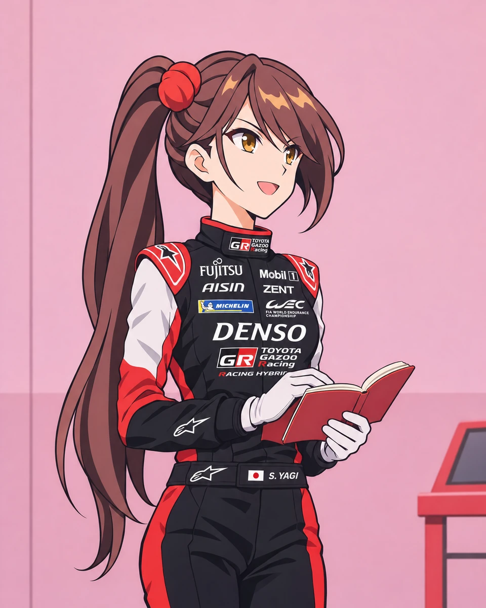

八木澄
日本 · 30 岁
丰田 × 瑞鹤
GR010 HYBRID
Toyota Gazoo Racing · Hypercar
服装标识 · DENSO、FUJITSU、AISIN、Mobil 1、ZENT、Michelin
查看 2025 赛季赛车服实拍
澄从长距离测试带来一本红皮簿子。每页对半划一道线，左边写车里是什么感觉，右边留着，下车跟工程师一起看过数据才填。
有晚她回来，坚持说踏板变软了。两条刹车曲线一叠，她看了半天，翻回那一页，把“查刹车”擦掉，换成“我怕跑宽，踩早了”。
车队无线电“上一圈是我刹早了。刹车没问题。”